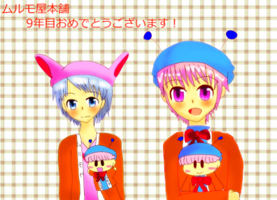

２０１３年１月４日、ムルモ屋本舗は開設から９周年を迎えました。
お祝いイラストをくださった梨璃さん、ありがとうございました！
９年前の２００４年１月４日、ムルモ屋本舗はコンテンツもほとんどない、訪れる人もほとんどいない状態でスタートしましたが、今の盛り上がりがあるのは皆さんのおかげです！
最近は更新ペースが遅くて申し訳ございません。２０１３年は１０年目にふさわしい、いろんなことにチャレンジしていきますので、ご愛顧のほどよろしくお願いします！ 最近影の薄い店長ムルモさんにももっとがんばってもらわねば・・・。
皆さんからも、こんなことやってほしいなどのネタがありましたらお気軽におっしゃってくださいね(^^)。
(2013/1/24)